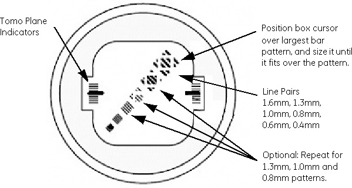

Operating Documentation
Direction 5193575-800, Rev# 5
LightSpeed 7.X Service Information - Adv
Operating Documentation |
| Last Revised: | 14 November 2005 |
Click on [Erase All] to clear all ROI Boxes.
Click on [Format] and select single image view format.
Select [Image Number 1] , the longest line visible. See Illustration 1.
Click [Measure] and select [ROI Box] .
Highlight the ROI box and use the left mouse button to resize the ROI box to fit into the 1.6 mm (large line pair) volume. (Make the ROI box a square box approximately 9.75mm x 9.75mm.)
Illustration 1: High Contrast Spatial Resolution Section

The standard deviation should equal 37 ±4.
| NOTE: | The optional patterns will give successively lower values and are not specified at this time. |
Click on [Browser] .
Select Exam, Series 2, Image 1, then click on [Viewer] .
Click on [Format] and select single image view format.
You should see all five 0.6mm bars in images reconstructed with the Bone algorithm.
The largest 5-line pair patterns (coded 1.6mm, 1.3mm, 0.8mm, 0.6mm, and 0.4mm) must be visible for the first four images in this series.
| NOTE: | The most common failure for this test is that the phantom has air bubbles that are obscuring the line pair patterns. |
Carefully inspect the 20cm QA phantom for air bubbles. If required, refill the phantom with water to eliminate all air bubbles.
Repeat the test to verify Image Performance.